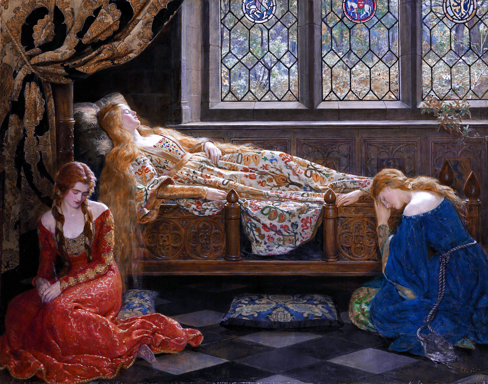

Коллекция 2020 года
Картины немецких авторов
«Аббатство в дубовом лесу», Каспар Давид Фридрих
Аббатство в дубовом лесу — Каспар Давид Фридрих. Холст, масло. 110 x 171 см
«Крыло сизоворонки», Альбрехт Дюрер
Крыло сизоворонки — Альбрехт Дюрер. Бумага, акварель. 20 x 20 см
«Портрет венецианки», Альбрехт Дюрер
Портрет венецианки — Альбрехт Дюрер. Дерево, масло, 32,5 x 24,5 см
Картины английских авторов
«Борцы», Томас Икинс
Борцы — Томас Икинс. Холст, масло. 122,87 x 152,4 см
«Лягушка», Чарльз Бертон Барбер
Лягушка — Чарльз Бертон Барбер. Холст, масло. 47 x 61 см

«Спящая красавица», Джон Малер Кольер
Спящая красавица — Джон Малер Кольер. Холст, масло. 111,7 x 142,2 см
Картины французских авторов
«Натурщицы», Жорж Сёра
Натурщицы — Жорж Сёра. Холст, масло. 200 x 249,9 см

«Портрет дамы с собачкой», Жан-Оноре Фрагонар
Портрет дамы с собачкой — Жан-Оноре Фрагонар. Холст, масло. 81.3 x 65.4 см
«После купания. Женщина вытирает затылок», Эдгар Дега
После купания. Женщина вытирает затылок — Эдгар Дега. Холст, масло. 62.2 x 65 см